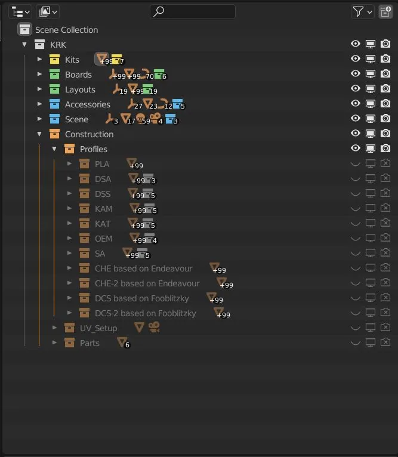
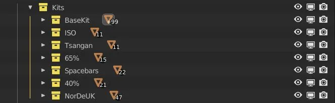
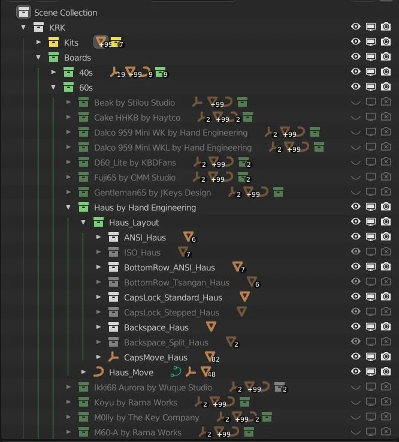
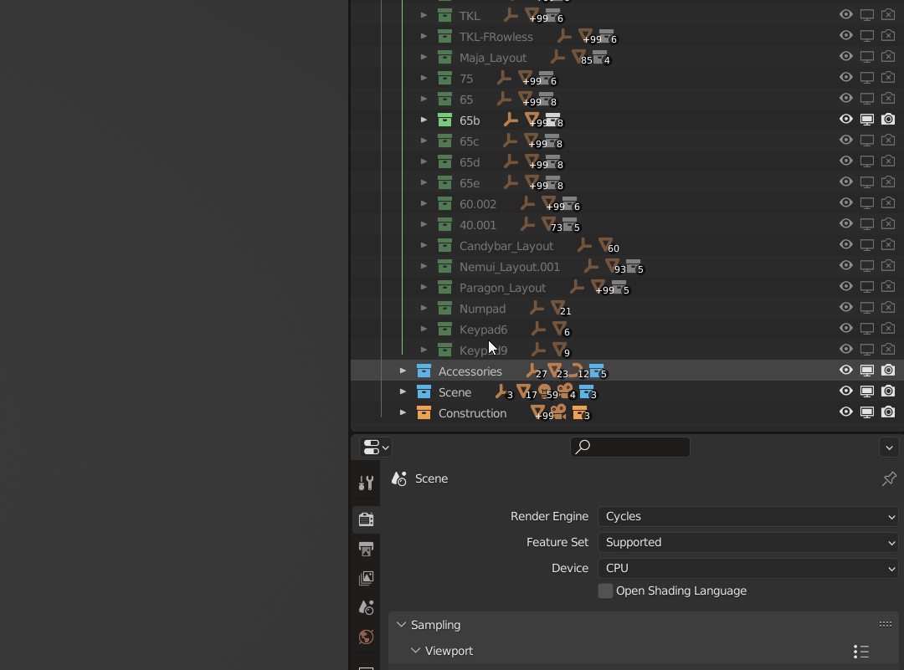
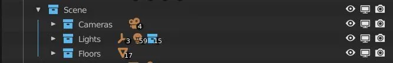
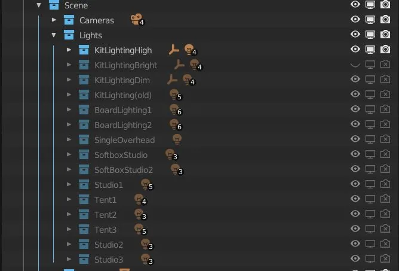
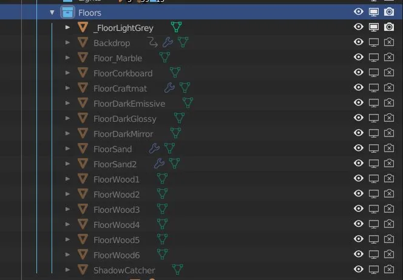
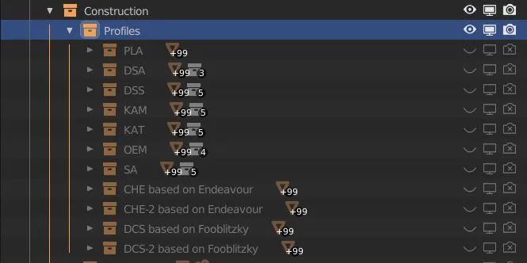
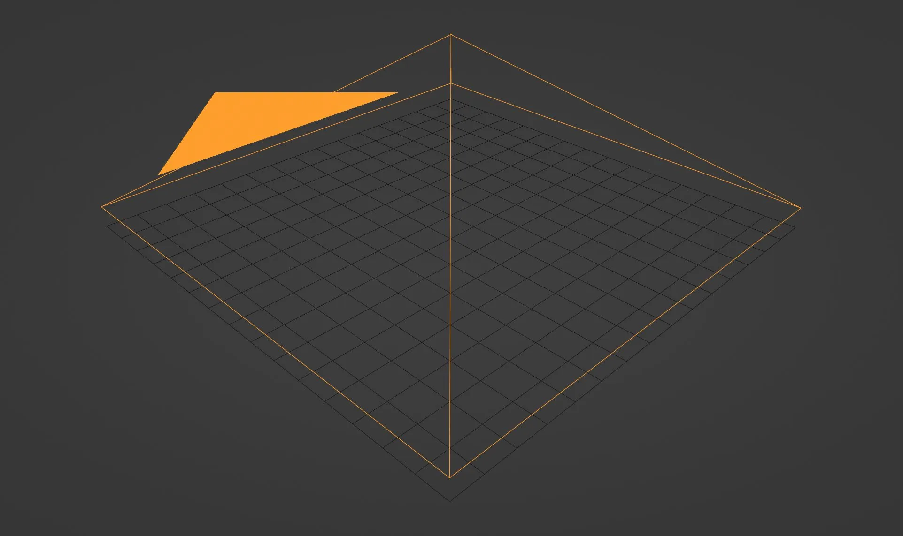
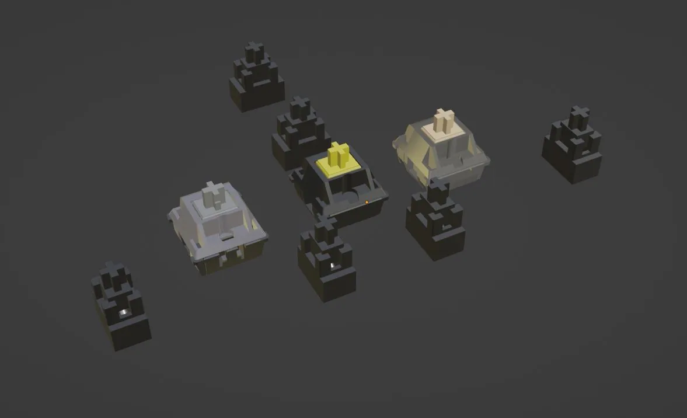

아웃라이너#
아웃라이너는 씬의 모든 항목을 정리하고 컬렉션으로 구성합니다.

키트#

Kits(키트) 컬렉션은 기본적으로 켜져 있습니다.
키보드#

키보드는 먼저 크기별로 그룹화되고, 같은 크기 안에서는 알파벳순으로 정렬됩니다. 삼각형 화살표를 클릭하면 하위 컬렉션을 단계별로 펼칠 수 있으며, 그 아래에는 단차 캡스락이나 Tsangan 하단열 같은 키보드의 배열 옵션이 있습니다.
배열#

이들은 직접 가져온 키보드를 채우는 데 사용할 수 있는 대체 배열입니다. 배열을 마우스 오른쪽 버튼으로 클릭하고 「연결 복제」를 선택해 연결 컬렉션을 생성한 다음, 자신의 키보드가 속한 컬렉션으로 옮기면 됩니다.
액세서리#
데스크매트 모델, 마우스, USB 케이블, 손목 받침대 등 사용 가능한 액세서리가 나열됩니다.
씬#

여기에서 조명, 카메라, 배경 등 씬 요소에 접근할 수 있습니다.
카메라#
KRK2는 카메라를 간소화했지만, 복제하여 카메라 위치와 각도를 직접 설정할 수 있습니다.
조명#

씬의 전체적인 느낌을 정할 수 있도록 여러 조명 프리셋을 준비했습니다. 인기 있는 스튜디오 조명 HDRI 프리셋을 참고했으며, 조정 가능성이 더 높아 강도와 위치를 자유롭게 조절할 수 있습니다.
바닥#

KRK에는 빠르게 시작할 수 있도록 흥미로운 바닥 세트가 포함되어 있습니다. 여기에는 섀도 캐처(ShadowCatcher) 바닥이 포함되며, 이는 FloorLightGrey를 기반으로 하여 그림자를 전문적으로 포착해 투명 배경 렌더링에 사용됩니다.
구조#
키캡 프로파일(높이)#

모든 키캡 프로파일(높이)이 여기에 있습니다.
UV 설정#

이 컬렉션에는 키캡의 UV 투영에 필요한 모든 내용이 포함되어 있습니다.
부품#

여기에는 오브젝트 데이터 교체를 통해 자신의 키보드에 추가할 수 있는 몇 가지 추가 부품이 포함되어 있습니다.